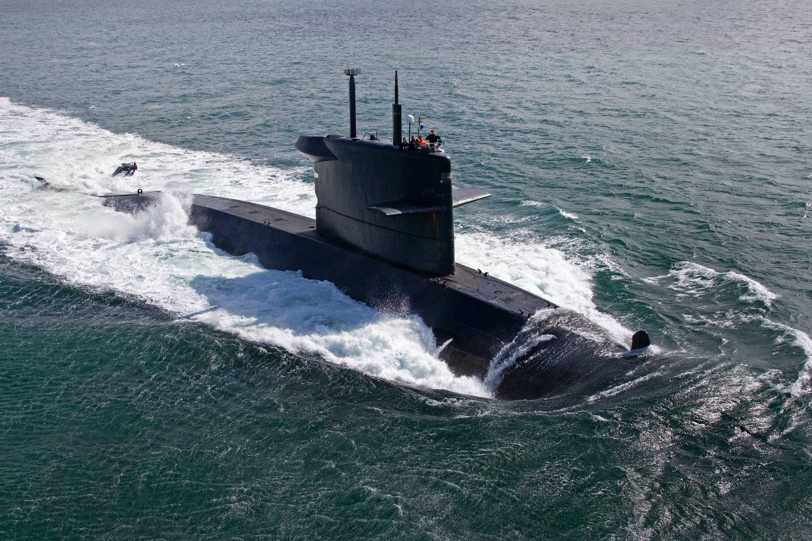
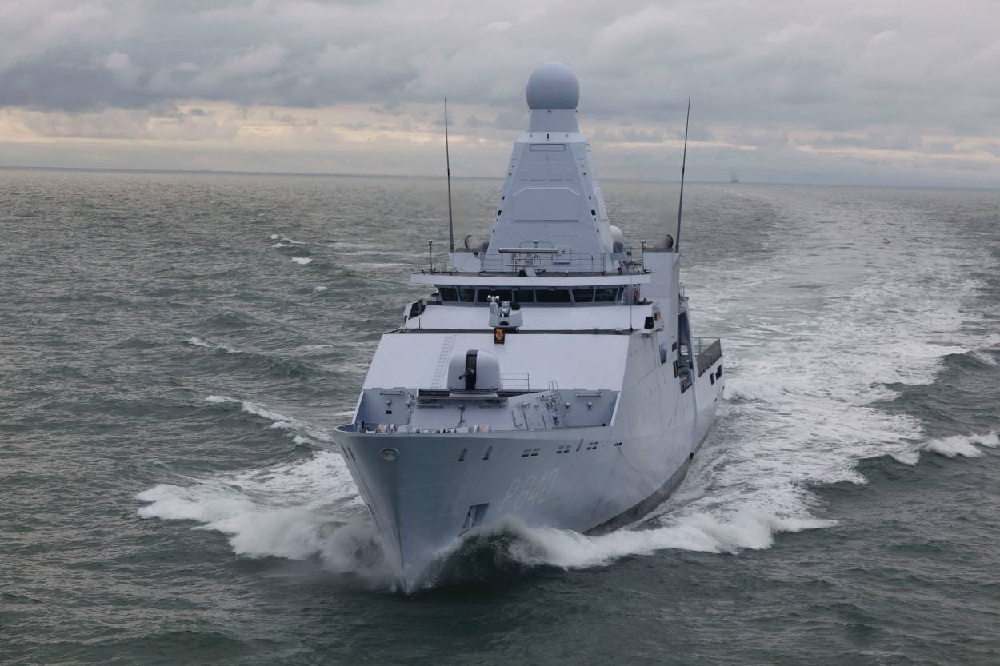
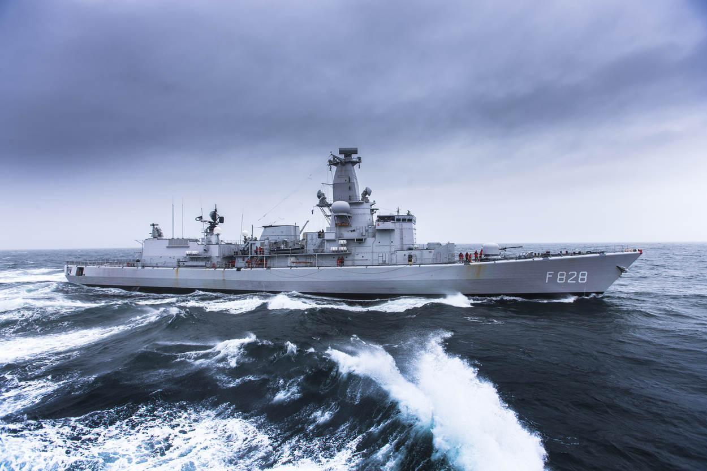
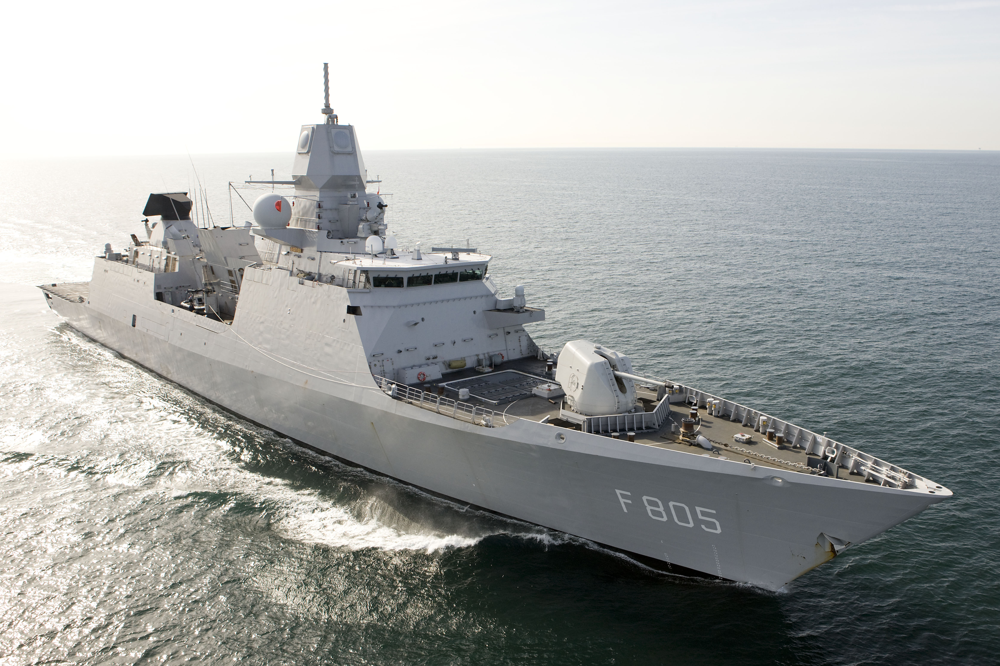
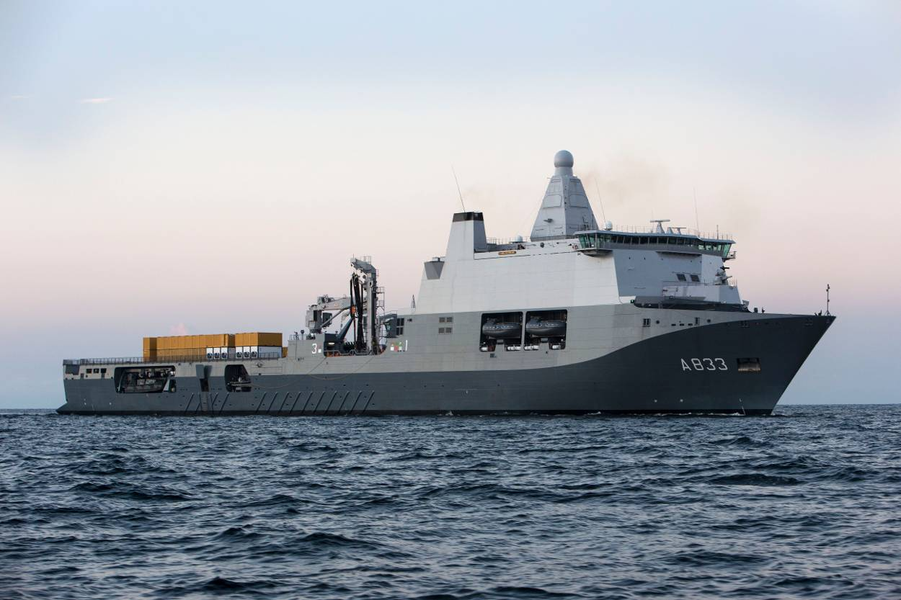

Informatie
Selecteer een schip:


Selecteer een schip:
De 4 onderzeeboten van de Walrusklasse zijn moderne conventionele, niet-nucleaire onderzeeboten. Ze onderscheiden zich door hun relatief beperkte afmetingen. Hierdoor kunnen ze ook vanuit ‘ondiep’ water inlichtingen verzamelen of (kust)verkenningen uitvoeren.
De patrouilleschepen van de Holland-klasse zijn flexibel inzetbare schepen, toegerust op de bewaking van kustwateren. Naast antiterrorisme- en antipiraterijoperaties, worden deze zogenoemde ocean-going patrol vessels (OPV) ook ingezet voor drugsbestrijdingsoperaties.
De marine heeft 2 multipurposefregatten (M-fregatten) voor oppervlakteoorlogsvoering op zee en onderzeebootbestrijding. Ook kunnen de schepen zichzelf verdedigen tegen dreigingen vanuit de lucht.
De Koninklijke Marine beschikt over 4 luchtverdedigings- en commandofregatten (LCF) van de De Zeven Provinciënklasse. De schepen kunnen een compleet vlootverband beschermen tegen vijandelijke dreigingen vanaf zee en uit de lucht (vliegtuigen én raketten).
Zr.Ms. Karel Doorman is een logistiek ondersteunings- en bevoorradingsschip, oftewel joint logistic support ship (JSS). Met een lengte van 205 meter is het het grootste schip van de marine. Hiermee kan de krijgsmacht operaties uitvoeren (ver) buiten de landsgrenzen.
